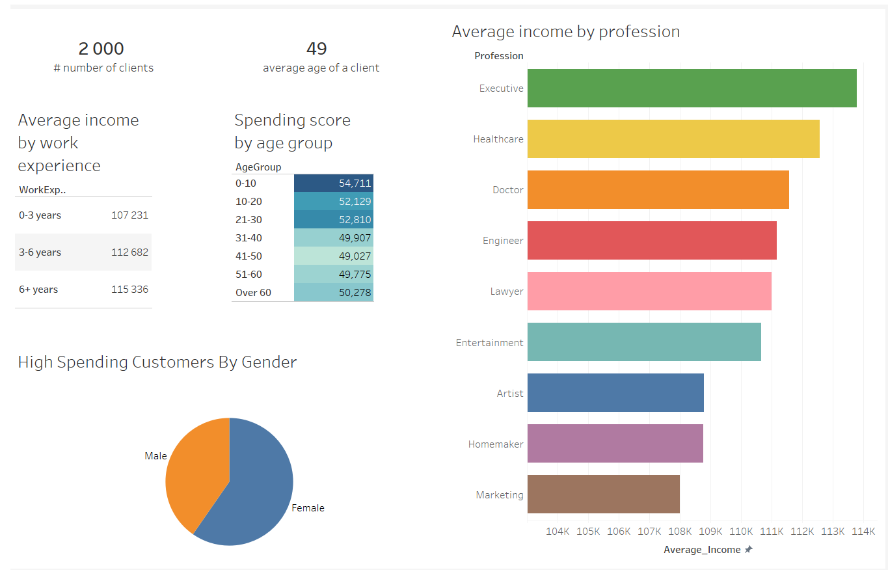

The purpose of this project is to use SQL querys to retrieve data from a database and visualise it in Tableau in order to gain insights into the data. The dataset contains information about customers and their characteristics, particularly related to their demographics and shopping behavior
/* This query calculates the average age of customers in the "Customers" table */ SELECT AVG(CAST(Age AS Float)) FROM cus.dbo.Customers /* This query groups customers by gender and calculates various statistics, including total count, average annual income, minimum annual income, maximum annual income, and the count of high spending customers (with a spending score of 80 or higher). */ SELECT Gender, COUNT(*) AS TotalCustomers, AVG(CAST([Annual Income ($)] AS INT)) AS AvgAnnualIncome, MIN(CAST([Annual Income ($)] AS INT)) AS MinAnnualIncome, MAX(CAST([Annual Income ($)] AS INT)) AS MaxAnnualIncome, SUM(CASE WHEN CAST([Spending Score (1-100)] AS INT) >= 80 THEN 1 ELSE 0 END) AS HighSpendingCustomers FROM cus.dbo.Customers GROUP BY Gender ORDER BY Gender; /*This query groups customers by their professions and calculates the average annual income for each profession. */ SELECT Profession, AVG(CAST([Annual Income ($)] AS INT)) AS Average_Income FROM cus.dbo.Customers GROUP BY Profession ORDER BY Average_Income DESC /* This query categorizes customers into work experience ranges (0-3 years, 3-6 years, and 6+ years) and calculates the average annual income for each range. */ SELECT CASE WHEN [Work Experience] >= 0 AND [Work Experience] <= 3 THEN '0-3 years' WHEN [Work Experience] > 3 AND [Work Experience] <= 6 THEN '3-6 years' ELSE '6+ years' END AS WorkExperienceRange, AVG(CAST([Annual Income ($)] AS INT)) AS AvgIncome FROM cus.dbo.Customers GROUP BY CASE WHEN [Work Experience] >= 0 AND [Work Experience] <= 3 THEN '0-3 years' WHEN [Work Experience] > 3 AND [Work Experience] <= 6 THEN '3-6 years' ELSE '6+ years' END ORDER BY WorkExperienceRange DESC /* This query groups customers by gender and calculates the total count of customers and the average annual income for each gender. */ SELECT Gender, COUNT(*) AS TotalCustomers, AVG(CAST([Annual Income ($)] AS INT)) AS AvgIncome FROM cus.dbo.Customers GROUP BY Gender ORDER BY Gender; /* This query categorizes customers into age groups (e.g., 0-10, 11-20, etc.) and calculates the average spending score (in the range of 1-100) for each age group. */ SELECT CASE WHEN Age >= 0 AND Age <= 10 THEN '0-10' WHEN Age > 10 AND Age <= 20 THEN '11-20' WHEN Age > 20 AND Age <= 30 THEN '21-30' WHEN Age > 30 AND Age <= 40 THEN '31-40' WHEN Age > 40 AND Age <= 50 THEN '41-50' WHEN Age > 50 AND Age <= 60 THEN '51-60' ELSE 'Over 60' END AS AgeGroup, AVG(CAST([Spending Score (1-100)] AS float)) AS AvgSpendingScore FROM cus.dbo.Customers GROUP BY CASE WHEN Age >= 0 AND Age <= 10 THEN '0-10' WHEN Age > 10 AND Age <= 20 THEN '11-20' WHEN Age > 20 AND Age <= 30 THEN '21-30' WHEN Age > 30 AND Age <= 40 THEN '31-40' WHEN Age > 40 AND Age <= 50 THEN '41-50' WHEN Age > 50 AND Age <= 60 THEN '51-60' ELSE 'Over 60' END ORDER BY AgeGroup;Tableau Dashboard
